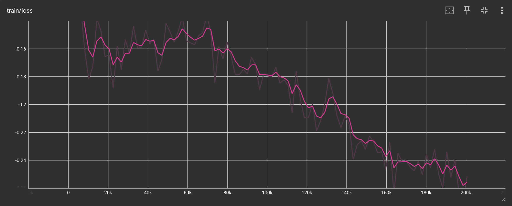
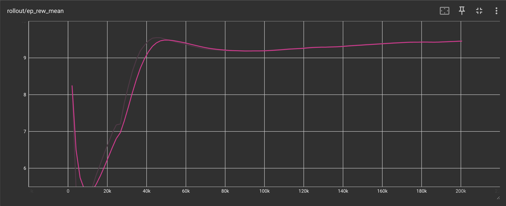
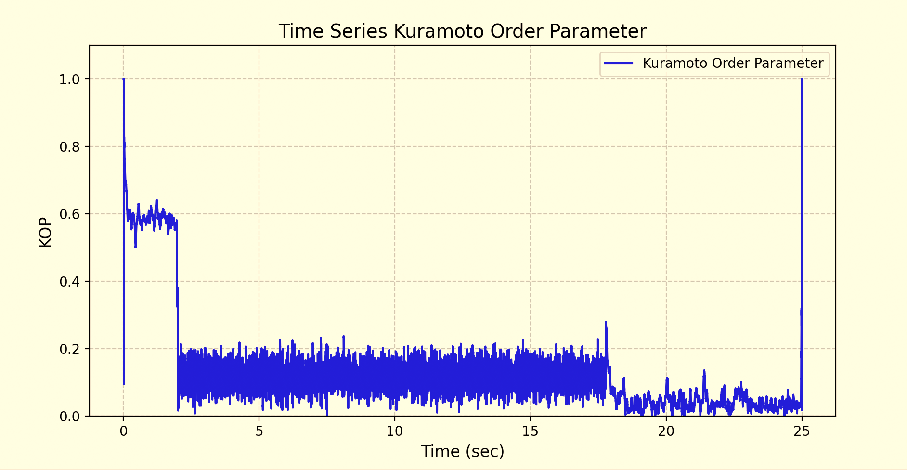
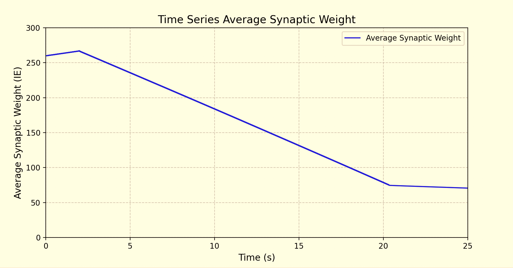
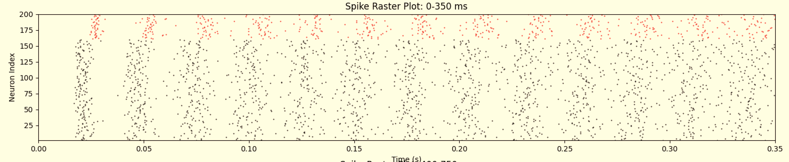

NeuroLoop¶
Overview¶

Closed-Loop Deep-Brain Stimulation for Controlling Synchronization of Spiking Neurons.

The overall architecture of this work.
NeuroLoop implements a closed-loop deep brain stimulation (cl-DBS) system to modulate neural synchronization in a computational model of the brain, optimizing the open-loop regime described in (Schmalz & Kumar, 2019) by implementing a Reinforcement-Learning (RL) driven feedback controller that adjusts stimulation parameters based on real-time measurements of network synchronization.
Pathological neural synchronization is a fundamental characteristic of several neurological and neuropsychiatric disorders, including Parkinson’s disease, epilepsy, and major depressive disorder, where excessive coupling between neural populations can directly contribute to debilitating symptoms such as tremor, seizures, and cognitive impairment. Deep brain stimulation (DBS) is an established therapy for modulating abnormal activity, but current clinical systems often operate in an open-loop manner, delivering stimulation continuously without adapting to the brain’s evolving state.
Results¶
Training Loss 
Episode Reward Mean 
Neural Synchronization 
Mean Synaptic Weight 
Neuron Spike Times (pre-stim) 
Neuron Spike Times (post-stim) 
Successfully learns to reduce neural synchronization and forces a spiking pattern.
System Model¶
This section describes the neural system model, control objectives, and reinforcement learning formulation underlying the NeuroLoop framework.
Neural System Model¶
Excitatory-Inhibitory (EI) Network Model
The neural system in this work is an Excitatory-Inihibitory (EI) Network of Leaky-Integrate-and-Fire (LIF) Neurons with Spike-Timing-Dependent Plasticity. The following LIF model (Brunel & Hansel, 2006; Vlachos et al., 2016) describes a single neuron's dynamics in the EI network:
Description of Terms
Note: \(i\) and \(j\) \(\epsilon \{E, I\}\), denoting a neuron population.
| Term | Units | Description |
|---|---|---|
| \(\tau_m\) | ms | Membrane time constant. |
| \(v_i(t)\) | mV | The neuron's membrane potential. |
| \(Z_i(t)\) | n/a | The synaptic input to the neuron population. |
| \(\mu_i + \sigma_i \sqrt{\tau_m} \chi(t)\) | n/a | Gaussian distributed baseline current to the neuron. |
| \(\chi(t)\) | n/a | White noise with a mean of 0 and variance of 1. |
| \(V_i(s)\) | mV | External stimulation to the neuron. |
| \(J_\text{ij}\) | mV | Synaptic strength between a presynaptic j-neuron and postsynaptic i-neuron. |
| \(S_\text{ij}(t)\) | n/a | The synaptic function. |
| \(\tau_d, \tau_r\) | ms | Decay and rise time constants. |
| \(X_\text{ij}\) | n/a | Input to the \(i^\text{th}\) population from the $j^\text{th} population. |
| \(W_\text{ij}(t)\) | n/a | The weights of each synaptic connection (plastic). |
| \(\delta(t - t_\text{pre} + t_\text{delay})\) | n/a | The Dirac-Delta function modeling synaptic input to a postsynaptic neuron from a presynaptic neuron when the presynaptic neuron fires at time \(t_\text{pre}\) with a synaptics delay of \(t_\text{delay}\). |
Spike-Timing-Dependent Plasticity (STDP) Model
The coupling value of the plastic EI synapse (\(W_\text{EI}(t)\)) is governed by STDP (Song et al., 2000; Ebert et al., 2014), defined as follows:
Description of Terms
| Term | Units | Description |
|---|---|---|
| \(W_\text{ij}(t)\) | n/a | The weights of each synaptic connection (plastic). |
| \(\Delta W_\text{IE}\) | n/a | The change in synaptic weight determined by the spike-time of a presynaptic (\(t_\text{pre}\)) and postsynaptic (\(t_\text{post}\)) neuron. |
| \(\eta_e\) | n/a | The rate at which the E-to-I synaptic coupling changes. |
| \(\alpha_{LTP}, \alpha_{LTD}\) | n/a | The relative contributions of LTP and LTD to \(\Delta W_\text{IE}\). |
| \(\tau_\text{LTP}, \tau_\text{LTD}\) | ms | STDP time constants defining the size of the long-term potentiation and long-term depression time window. |
| \(A_0\) | n/a | Fixed jump added to a trace at each spike. |
| \(A_\text{pre}\) | n/a | Presynaptic spike trace (decaying memory of recent pre spikes). |
| \(A_\text{post}\) | n/a | Postsynaptic spike trace (decaying memory of recent post spikes). |
Control Objective¶
The primary objective of NeuroLoop is to supress pathological neural synchronization while minimizing the required stimulation intensity to do so. Excessive stimulation amplitude is undesirable due to increased energy consumption and the risk of stimulation-induced side effects. Control is implemented in a closed-loop manner, where stimulation parameters are continuously adjusted based on real-time observations of neural activity.
At each control timestep, stimulation amplitude is applied to the neural system according to the FTSTS motif. The resulting neural dynamics are observed, enabling the controller to respond to changes in network state. The control objective and feedback signals are formalized in the following section.
Problem Formulation¶
NeuroLoop is formulated as a Markov Decision Process (MDP) defined by the tuple
MDP Terms
\(S\) - The state space; encodes the feedback signals.
\(A\) - The action space; encodes the control signals (canonical DBS parameters).
\(P\) - The transition dynamics.
\(R\) - The reward function; encodes the control objective.
Environment¶
NeuroLoop wraps the neural model described above in a Gymnasium-style environment for developing a Reinforcement Learning (RL) controller as depicted in the figure at the top of this page. This environment structure provides a standard interface to the action space, state space, reward function, and episode configuration for the RL agent to interact with.
flowchart LR
subgraph gym [Gymnasium]
nn(Neural Model)
env(FTSTSEnv)
end
subgraph controller [Controller Unit]
agent(RL Algorithm)
features(Feature Extraction)
end
agent -- action --> env
env -- reward --> agent
env -- state --> features
features -- state --> agent
env --> nn --> envAction Space¶
| Index | Action | Unit | Range |
|---|---|---|---|
| 0 | Amplitude | mV | [10, 200] |
| 1 | Frequency | Hz | [5, 128] |
| 2 | Pulse Width | \(\mu\)s | [50, 500] |
The agent’s action space consists of a single continuous variable corresponding to the stimulation amplitude applied within the FTSTS framework. The remaining canonical DBS parameters (i.e., frequency and pulse width) are fixed according to the FTSTS motif, allowing the effects of adaptive amplitude modulation to be isolated and analyzed. Actions are represented in a normalized space and linearly rescaled to the biophysically meaningful stimulation range prior to application. For example, the stimulation amplitude is a continuous variable internally normalized to the range [−1, 1] and mapped to the suggested range of [10, 200].
State Space¶
| Index | Observation | Unit | Range |
|---|---|---|---|
| 0 | Synchrony | n/a | [0, 1] |
| 1 | Mean Excitatory Membrane Voltage | mV | [−80, 50] |
| 2 | Std. Excitatory Membrane Voltage | mV | [0, 30] |
| 3 | Mean Inhibitory Membrane Voltage | mV | [−80, 50] |
| 4 | Std. Inhibitory Membrane Voltage | mV | [0, 30] |
| 5 | Mean \(I \rightarrow E\) Synaptic Weight | n/a | [0, 1] |
At each control timestep, the reinforcement learning agent observes a compact state vector derived from population-level neural statistics. All feedback signals are aggregated over a fixed temporal window and standardized prior to control by subtracting a running mean and dividing by a running standard deviation computed over interaction trajectories. This normalization ensures that each state dimension has approximately zero mean and unit variance, stabalizing learning dynamics across stimulation regimes.
The synchrony measurement used here is a per-timestep estimate of voltage-based population synchrony suitable for closed-loop control.
where \(v_i(t)\) is the membrane potential of neuron \(i\) and \(\bar{v}(t)\) is the population mean voltage. Values near zero indicate asynchronous activity while larger values indicate increased levels of synchronization of spiking patterns. While less accurate, this synchrony index is an efficient estimation of population-level synchrony that can be used as a feedback signal each step of the episode.
The mean population-level membrane potentials, (\(\mu_{V_E}\), \(\mu_{V_I}\)), help define fragile vs robust network states relative to the firing threashold. Without these feedback signals, highly excitable networks exhibiting high levels of synchrony may receive additional stimulation to reduce the synchronization at the cost of destabalizing the network into runaway firing.
The standard deviation of population-level membrane potentials, (\(\sigma_{V_I}\), \(\sigma_{V_I}\)), offer insight into the coherence of the network. Without these feedback signals, we may fail to disambiguate two main modes of reducing synchrony: descynchronization and silencing. The desired desynchronization involves breaking phase-locked oscillations while silencing involves entirely suppressing activity.
The inclusion of mean and variance signals of exchitatory and inhibitory membrane potentials allows inference of the stability and coherence of the neural population, resolving ambiguities that cannot be captured by sunchrony measueres alone.
The mean inhibitory-to-excitatory synaptic coupling value, \(\mu_{W_\text{IE}}\), of the plastic E-to-I synapse is governed by the underlying STDP model. This feedback signal represents the effective strength of the inhibitory regulation exerted on excitatory neurons, capturing slower-evolving network properties that influence stability and synchrony. Additionally, as shown in the graph below, the mean synaptic weight is highly correlated with the ground-truth synchrony measurement - the Kuramoto Order Parameter (Kuramoto, 1984; Daido, 1992; Tass, 2007; Ebert et al., 2014). Incorporating this feedback signal enables stimulation to be adapted in response to changes in synaptic interactions rather than instantaneous activity alone and serves as a secondary strong proxy for the true synchrony index.

Correlating average synaptic weight with the Kuramoto Order Parameter.
Reward Function¶
The reward function consists of a dense per-timestep component and an additional terminal penalty based on the Kuramoto Order Parameter, balancing synchronization suppression against stimulation cost:
where \(r_1\), \(r_2\), \(r_3\), and \(r_4\) are respectively identified as “synchrony,” “squared stimulation amplitude,” "mean synaptic weight," and “Kuramoto Order (Synchrony) Parameter.” Weighting coefficients \(\alpha\), \(\beta\), \(\gamma\), and \(\delta\) help control the trade-off between desynchronization performance and stimulation intensity, encouraging the agent to suppress pathological synchronization while avoiding unnecessarily large stimulation amplitudes. Additionally, the reward signal is normalized using running estimates of its mean and variance.
The synchrony measurement used for the first reward component is the same as that described in the state space. This synchrony term directly encodes the control objective of descynchronization. Penalizing high degrees of synchrony aligns the learned objective with clinical findings that excessive population synchrony is linked to pathological motor symptoms.
The quadratic penalty on stimulation amplitude reflects constraints on DBS energy consumption and safety. Squaring the amplitude disproportionaly penalizes larger stimulation values, further encouraging minimal energy usage.
The mean synaptic weight, \(\mu_{W_\text{IE}}\), is the same as that described in the state space. As mentioned in that section, this state variable captures network adaptation governed by STDP, not just instantaneous dynamics. Penalizing inhibitory-to-excitatory synaptic coupling discourages control strategies that rely on long-term synaptic adjustments rather than short-term modulation of neural activity. This promotes stimulation policies that achieve desynchronization while preserving stable network connectivity.
The final component of the reward function is another measurement of synchrony. As mentioned in the state space, the per-step voltage-based synchrony measurement is useful for dense feedback. It is a more efficient but less accurate proxy for the true synchrony measurement. A more accurate measurement of the synchrony level can be obtained by computing the Kuramoto Order Parameter (KOP) based on the spike times of neurons in the excitatory population. As used in this work, the KOP is a spike-time phase-based approach for computing synchrony which, in DBS, is fundamentally about phase locking. It measures the degree of phase locking between oscillatory neural activity across the population. While it is more accurate, it is not feasible to compute at every timestep of the simulation. It is therefore computed at the end of each episode as a sparse reward component.
Jointly, the final reward signal is normalized using running estimates of its mean and variance, maintaining a consistent reward scale and stabalizing training.
API¶
class gymnasium.Env
class dbsenv.envs.DBSEnv(gymnasium.Env)
class dbsenv.envs.FTSTSEnv(DBSEnv)
The main Gymnasium class for implementing Reinforcement Learning Agent environments.
The class encapsulates an environment with arbitrary behind-the-scenes dynamics through the step() and reset() methods.
The main API methods that users of this class need to know are:
step()- Updates an environment by taking an action and returning the agent's observation, the reward for taking that action, whether the environment has terminated or truncated, and auxiliary diagnostic information.reset()- Resets the environment to an initial state, returning an initial observation and auxiliary diagnostic information. Required before the first call tostep().render()- Renders the environment to help visualize what the agent sees.close()- Closes the environment and frees up resources.
Methods¶
DBSEnv.init¶
DBSEnv(
sim_config: SimConfig,
model_class: type[NeuralModel],
model_params: dict | None = None,
render_mode: str | None = None
)
PARAMETERS:
sim_config– Simulation configuration (timing, sampling, resolution)model_class– Neural model class implementing the spiking dynamicsmodel_params– Optional model-specific keyword argumentsrender_mode– Optional Gymnasium render mode
DBSEnv.reset¶
DBSEnv.reset(
seed: Optional[int] = None,
options: Optional[dict] = None
) -> tuple[ObsType, dict[str, Any]]:
Resets the environment to an initial state (reinitializing plasticity, stimulation timing, internal counters, etc.), returning an initial observation and info.
PARAMETERS:
seed (optional int)– The seed that is used to initialize the environment's PRNG (np_random) and the read-only attribute np_random_seed.options (optional dict)– Additional information to specify how the environment is reset.
RETURNS:
observation (ObsType)– Observation of the initial state.info (dict)– Auxiliary diagnostic information complementing the observation.
DBSEnv.step¶
Runs one timestep of the environment's dynamics using the agent's actions.
PARAMETERS:
action (ActType)– an action provided by the agent to update the environment state.
RETURNS:
observation (ObsType)– Population-level neural statisticsreward (SupportsFloat)– The reward as a result of taking the action, encouraging (de)synchronizationterminated– Episode termination flagtruncated– Truncation flag (unused)info– Diagnostic data (e.g., spike timing)
Attributes¶
DBSEnv.action_space¶
The actions are continuous and normalized internally before being mapped to biophysically meaningful stimulation parameters.
See action space
DBSEnv.observation_space¶
Observations are aggregated over a fixed temporal window and normalized to ensure stable learning dynamics across stimulation regimes.
See state space